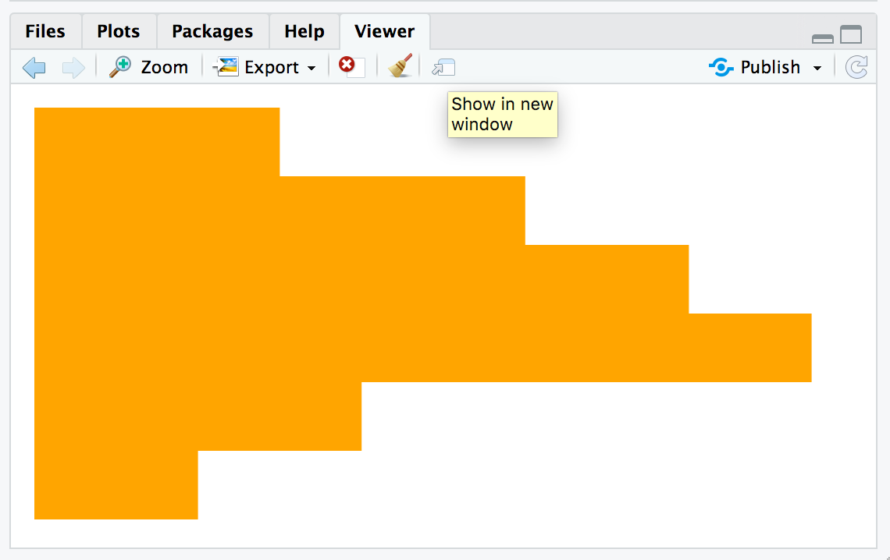
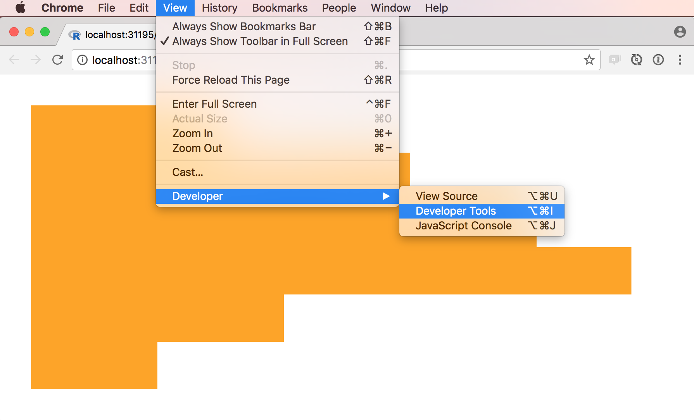

Development and Debugging
Source:vignettes/development_and_debugging.Rmd
development_and_debugging.RmdOverview
This article describes recommend workflow for developing D3 visualizations, including:
Using integrated tools for r2d3 within RStudio to preview visualizations; and
Using browser debugging tools to pinpoint errors in your code.
Note that the development tools described above are only fully supported within the RStudio v1.2 preview release (as opposed to the current stable release) so you should download the daily build before trying these features out.
RStudio Preview
The RStudio v1.2 preview release includes support for previewing D3 scripts as you write them. To try this out, create a D3 script using the new file menu:

A simple template for a D3 script (the barchart.js example shown above) is provided by default. You can use the Preview command (Ctrl+Shift+Enter) to render the visualization:

You might wonder where the data comes from for the preview. Note that there is a special comment at the top of the D3 script:
This comment enables you to specify the data (along with any other arguments to the r2d3() function) to use for the preview.
Viewer Options
The viewer argument to the r2d3() function enables you to customize how D3 visualizations are viewed when printed from within the RStudio console. The following options are available:
| Option | Description |
|---|---|
viewer = "internal" |
(Default). Display within the RStudio Viewer pane. |
viewer = "external" |
Display within an external RStudio Viewer window. |
viewer = "browser" |
Display within an external web browser (e.g. Chrome). |
The “external” option is useful if your visualization requires more space than an RStudio pane affords. The “browser” option is useful if you need access to browser debugging tools during development.
Here’s an example of adding the viewer argument to the preview comment at the top of a D3 script:
Console Logging
When troubleshooting a visualization it is also often useful to print diagnostics to the JavaScript console. This is usually accomplished by calling console.log() with a message that can help you troubleshoot the problem at hand.
For instance, the following script does not trigger any runtime errors but also does not render anything at all:
// !preview r2d3 data=c(0.3, 0.6, 0.8, 0.95, 0.40, 0.20)
var barHeight = Math.ceil(height / data.length);
svg.selectAll('rect')
.data(data)
.enter().append('rect')
.attr('width', function(d) { return d; })
.attr('height', barHeight)
.attr('y', function(d, i) { return i * barHeight; })
.attr('fill', 'steelblue');In this case, we think the problem might be with the width so we print this value to the console as follows:
// !preview r2d3 data=c(0.3, 0.6, 0.8, 0.95, 0.40, 0.20)
var barHeight = Math.ceil(height / data.length);
svg.selectAll('rect')
.data(data)
.enter().append('rect')
.attr('width', function(d) {
console.log("The width has value " + d)
return d * width * 0;
})
.attr('height', barHeight)
.attr('y', function(d, i) { return i * barHeight; })
.attr('fill', 'steelblue');r2d3 renders renders the JavaScript console output directly into the visualization. For this example, this will show that the width is 0.2, which is too small to be visible:

Debugging
If you need to debug errors or other unexpected behavior in your D3 script, you can use the Show in new window window command within the RStudio Viewer to show the visualization in an external web browser:

It’s also possible to add the viewer="browser" option to your !preview comment at the top of the file to skip the RStudio Viewer and route the visualization directly to an external browser:
Once you’ve opened the visualization you can use your browser Developer Tools to do additional debugging (typically you’ll need to reload the page after you’ve opened the developer tools pane in order to reproduce the error):

Your original D3 script and dependencies are available as a r2d3-script-### script which can be used to set breakpoints or inspect errors in detail: